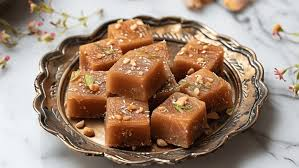

Gulab Jamun
Ingredients
- milk
- flour
- ghee
- baking powder
- almonds,raisins,pistachio
- oil
Gulab Jamun
Recipe
- 1 cup dry milk powder
- 3 tablespoons all-purpose flour
- 2 tablespoons ghee (clarified butter), melted ½ teaspoon baking powder
- ½ cup warm milk
- 1 tablespoon chopped almonds (Optional)
- 1 tablespoon chopped pistachio nuts (Optional)
- 1 tablespoon golden raisins (Optional)
- 1 pinch ground cardamom
- 1 quart vegetable oil for deep frying
- 1 ¼ cups white sugar
- 7 fluid ounces water
- 1 pinch ground cardamom

Barfi
Ingredients
- Milk
- Sugar
- ghee or butter
- cardamom
- vanilla extract
- saffron
Barfi
Recipe
- Grease a 9×6 baking pan.
- Heat a heavy bottom pan on medium to low heat. Once hot, add in the butter and 1/2 cup of milk. Let the butter melt.
- Once the butter melts, add in the milk powder stirring constantly. Once the powder is incorporated with milk, gradually add in the powdered sugar.
- If there are bits of dry powder left, add in the three tablespoons of milk. If you need to add more milk, add a tablespoon at a time. At this stage the mixture should have a paste like consistency.
- While continuously stirring, cook the mixture for 8-9 minutes or until it easily leaves the surface of the pan. The mixture should look like a dough.
- Turn the heat off and add vanilla essence, cardamom, and a tablespoon of pistachios. Mix everything well. Spread the mixture evenly on the greased pan and top the remaining tablespoon of pistachios.
- Let the burfi set for at least three hours. Once set, it can be stored in an airtight container at room temperature for up to seven days.
